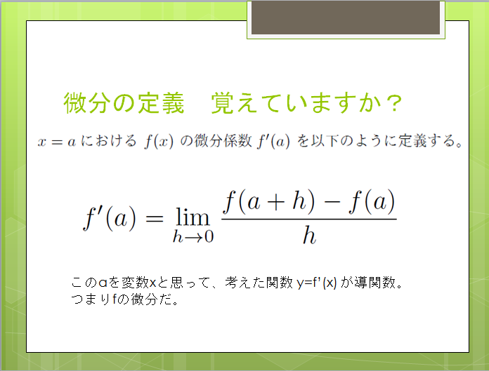
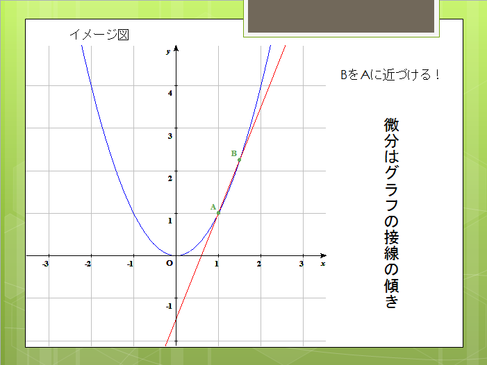
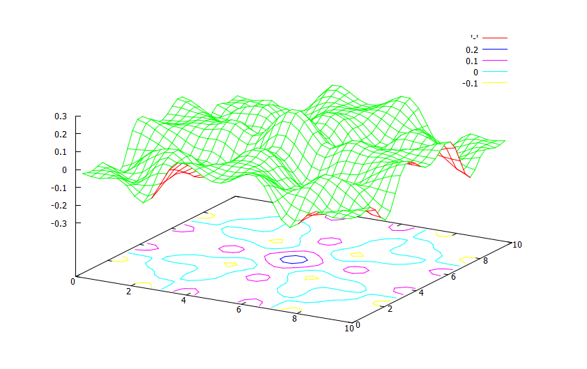
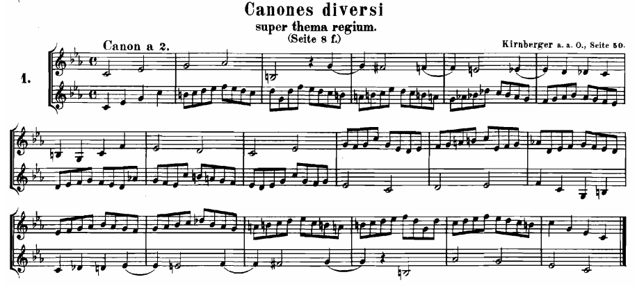

講師一覧
簑毛 崇章（みのも たかあき） 北海道大学大学院理学院数学専攻
数学を専門に勉強したいと思ったのは中学生の頃、インターネットでバーゼル問題やゼータ関数の記事を読んだことがきっかけでした。
中学校の教科書にはない美しい数式の数々がそこにありました。それ以後、数学を勉強しています。このホームページも
学校では習わないようなものも少しずつ書きつつ、数学の魅力が伝わるように編集していきたいと思います。
授業では特に数学の可視化にこだわって、目で見てもわかりやすいように工夫しています。
最近は、C,C++言語で数値計算をして、それをアニメーションにして見たり、調べたりするのが趣味です。パソコン初心者だけど、C,C++,Java言語をやってみたいという人も気軽にご相談を！
（数学講師・代表）
本が好きです。数学書はもちろん、C++言語などのパソコンの本、小説、哲学、詩、精神医学、臨床心理学、宗教学、音楽など、理系以外の本も読みます。
後藤 大輝（ごとう ひろき） 京都大学理学部在学中
ボードゲームをしたがっている雀キチ苦学生。 公安「が」捕まるというとんでもない事件が起きた大学に出没する。
化学専攻の割に化学系の専門単位よりも地学系の専門単位の方が多いらしい。 （化学講師・副代表）
戸原 郁（とはら いく） 一橋大学社会学部在学中
趣味はツイッターと読書。ジェンダー論や宗教社会学、理論社会学に興味があります。 無類の猫好きで、大学近くの猫カフェでよく猫と戯れていますが、いつも男一人で行くので店員さんにどう思われていることやら…
英語、特に長文読解は、単・熟語だけでなく文の構造を理解することが問題を解くための鍵となります。いろいろな読解のスキルを身につけて、受験英語を乗り切りましょう！ （国語・英語講師）
元講師 児玉 大紀（こだま だいき） 北海道大学理学部数学科卒
大学へ入学するのには、数学を理解することも大切ですが、数学を実際に解けるようにならなければなりません。解けるようになるには、何を理解すべきか、逆に何を捨てるかをはっきり意識して勉強することが重要になってきます。 僕と一緒に大学への門をこじ開けましょう！
簑毛の授業風景
微分の定義とそのイメージの話をしたときのスライド。

アニメーションでも説明します。

たまに脱線します。波のお話。（動画付）

対称式、交代式の話から対称性の話になり、そもそも「対称」って何？ってことになり、群論の話になり、バッハの話になってしまったときに使った楽譜。（バッハ「音楽の捧げもの」から）

参考（14のカノン）
楽しく数学しよう！
私の本棚です。私のことが知りたい人はどうぞ↓。